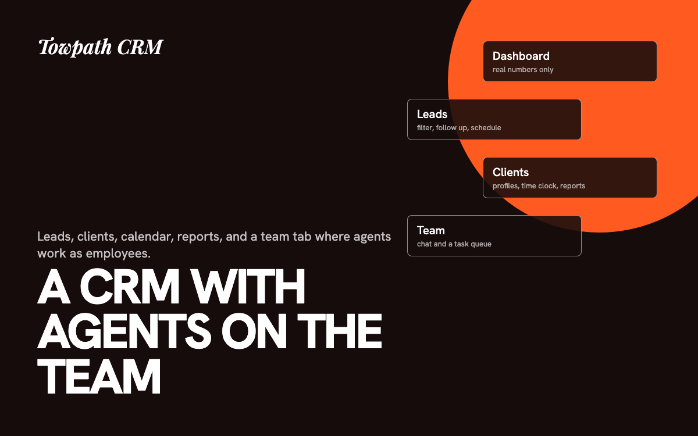

Towpath CRM, where AI agents sit on the team.
A working CRM for a small agency, with leads, clients, a calendar, branded reports, and a team tab that treats AI agents like employees.

The problem
Leads, client work, time, and reports lived in separate tools and in my head. I also had AI agents doing real jobs with nowhere to see or direct them. I wanted one app on a custom domain where both humans and agents show up.
What it does
- Leads and clients. Filters, follow-up cadence, client profiles with items marked resolved, and a tools panel with links to each client's analytics.
- Team tab. Agents appear as employees with job titles. Each has a chat and a task queue.
- Scheduler. A self-built meeting picker that shows 9 to 5 slots and greys out overlaps, tied to a lead or client.
- Reports and time clock. One click builds a branded, self-contained client report that prints to PDF. A per-client clock feeds a time report.
Decisions that mattered
- Nothing runs unasked. Agent tasks start in backlog. Only tasks I move to queued are meant to be picked up by an agent session.
- Honest analytics. The app shows only numbers it can verify and labels the rest "not connected". It never estimates.
- Client data stays out of the bundle. Seed files with client notes and leads are excluded from the deploy, and I confirmed the live site returns 404 for them.
- Checked the email assumption. A DNS check showed the domain's mail ran on a free plan that cannot send. So the Email tab says so and supports copy, send elsewhere, then log as sent, instead of faking a send button.
- No build step. Plain JavaScript modules, with one storage file as the only thing that changes when the database moved in.
Security and testing
Data sits in Supabase with row-level security locked to an allowlist of two approved users. I verified an anonymous visitor is locked out by calling the API directly. Testing was 28 click-through checks and two rounds of simulated-database checks. I have not run a formal usability test.
Outcome
Live on a custom domain since September 2026 and used for Towpath Creative's day-to-day work. It is private, so there is no public link and no usage numbers to quote.
The code
A sanitized copy of this project is public. Client data, keys, and personal details are removed, and sample data stands in where the real data lived.
Tools, stack, and skills
- Stack
- JavaScript modules, Supabase (Postgres, row-level security, edge functions), Netlify
- Models
- Claude through Claude Code agents; Gemini, Groq, OpenRouter, and Cerebras selectable in settings
- Tools
- Claude Code, MCP
- Skills
- Product design, information architecture, data modeling, security by design, AI agent UX, report design